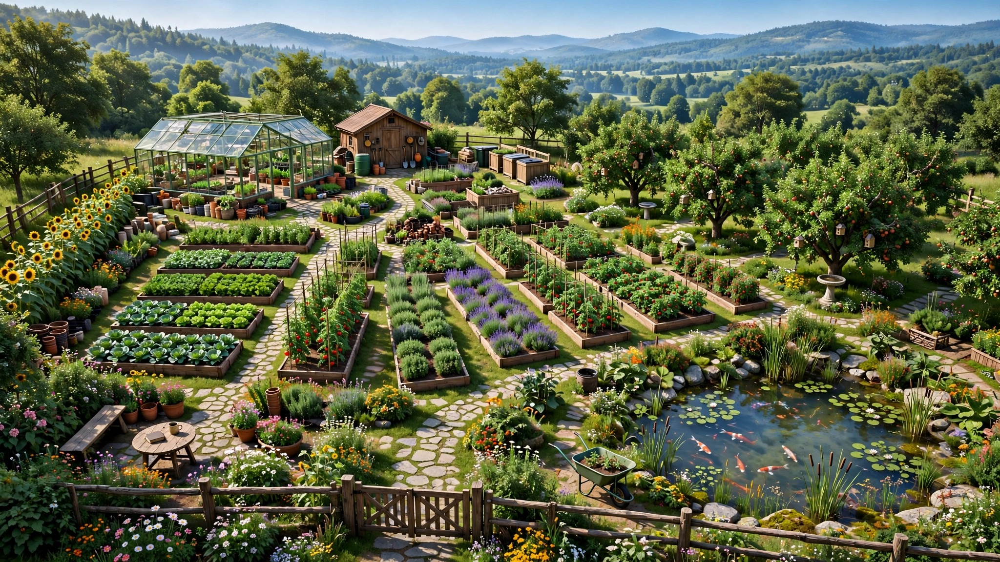

Dossier investisseurs · relevé du dépôt le 29 septembre 2026
GARDENFERVOR
Construire. Cultiver. Transformer.
Simulation réaliste mais ludique de jardinage, agriculture, paysagisme, construction, production et développement progressif d’une propriété vivante.
RoadMap V3J74 auditéJ81 commitéJ82 en cours
Unreal Engine 5.8.3C++Data-drivenPersistentTested

Illustration d’intention. Aucune image de ce dossier n’est une capture de gameplay.
CONCEPT
Tableau de bord
Chiffres lus dans le dépôt au moment de cette mise à jour. L’en-tête de la RoadMap V3 enregistre encore l’audit J74. Le code a avancé depuis.
V3RoadMapJ81Dernier jalon commité17SaveVersion5.8.3Unreal Enginebb1ebc4HEADData-drivenArchitectureActivePersistance75Fichiers de tests commités
HEAD complet : bb1ebc474cd6816fd7aeeb23877663da0273a5af, message « J81: add crafting system ». La SaveVersion 16 citée par l’audit J74 correspond à la découverte encyclopédique. La version courante du schéma est 17, introduite pour l’état des contrats.
Le projet
Une propriété qui se construit, pas seulement un jardin à arroser.
GardenFervor est un jeu en vue première personne. Le joueur entretient un terrain, cultive, construit, stocke, vend, et fait progresser une propriété. Le moteur est Unreal Engine 5.8.3. La logique de jeu est écrite en C++. Blueprints et UMG servent à l’assemblage, à la présentation et à l’interface lorsque c’est le bon outil.
Le joueur développe progressivement une propriété vivante, productive, personnalisable et techniquement évolutive. Cette phrase décrit la direction du produit. Elle décrit aussi ce que le socle actuel commence à rendre possible. Elle décrit la suite de la RoadMap V3 pour tout ce qui n’est pas encore dans le jeu.
Les statuts utilisés dans ce dossier sont stricts : EXISTANTVALIDÉEN COURSPLANIFIÉVISION. Un système présent dans le code commité est existant. Un système cité comme validé par la RoadMap ou par l’audit J74 est validé. J82 est en cours parce que son travail est dans l’arbre de fichiers et n’est pas commité. Le reste de la RoadMap V3 est planifié.
Trajectoire du produit
Cette chaîne est la progression visée. Elle est jouable aujourd’hui sur ses premiers maillons : terrain, culture, construction, inventaire, vente, objectifs. L’autonomie d’un domaine avancé reste devant.
Petit jardinTerrain cultivéPropriété développéeProductionAutonomieDomaine avancé
Chronologie du développement
Le projet s’est construit par couches, puis par jalons V3.
Fondation · terrain, inventaire, constructionAgriculture · sol, cultures, santé, qualitéPersistance · schéma de sauvegarde versionnéEnvironnement · UDS / UDW branchés au gameplaySurfaces de culture · landscape et containersProgression · objectifs, niveaux, déblocagesProduction · conservation, transformation, craftingÉconomie · prix, fraîcheur, contratsAgriculture avancée · planifiée à partir de J83Domaine vivant · planifié à partir de J90
Le détail de chaque étape à partir de J75 est dans la RoadMap V3, plus bas.
État actuel du développement
Où en est le dépôt, jalon par jalon.
J74 est le dernier audit écrit dans la RoadMap V3. J75 à J81 sont des commits sur master. J82 est le travail ouvert. J83 à J108 sont les jalons officiels suivants, avec leurs intitulés.
Socle audité
J74Audit du socle jouable et objectifs. Commit documenté 32b9e1c. SaveVersion alors à 16.VALIDÉ
Phase A — Consolidation de la progression existante
J75Consolidation de la progression existante. Commit 76f9ecb.EXISTANT
J76Intégration des déblocages au contenu réel. Commit e70cf88.EXISTANT
J77Contrats / commandes. Commit 4139dec. Le schéma passe en SaveVersion 17.EXISTANT
Phase B — Économie / production
J78Fraîcheur économique. Commit be41ea7.EXISTANT
J79Conservation. Commit 1d43160.EXISTANT
J80Transformation. Commit b15c838.EXISTANT
J81Crafting. Commit bb1ebc4. C’est le HEAD.EXISTANT
J82Atelier fonctionnel. Fichiers d’atelier présents dans l’arbre de travail, non commités.EN COURS
Phase C — Parité agricole / environnement de culture
Le contenu visuel reste en phase de fondation : beaucoup de représentations sont encore remplaçables. La liste ci-dessous porte sur la simulation, la donnée et la persistance.
Environnement
VALIDÉ
Ultra Dynamic Sky 9.7 et Ultra Dynamic Weather 9.7
Heure, date, vitesse de simulation, cycle jour / nuit
Saison, pluie, température, vent, nuages, météo
Passerelle UGFUDSIntegrationSubsystem vers un état environnemental lu par le gameplay
La pluie, la température et la saison alimentent déjà des règles agricoles. L’exposition fine des acteurs, les matériaux météo et les microclimats sont les jalons J95 à J98.
Terrain
VALIDÉ
Landscape continu 80 × 80 m, 5 × 5 components
25 parcelles de 16 × 16 m
Grille agricole logique 8 × 8, cellules de 2 × 2 m
Cette grille est une donnée. Elle est invisible dans le monde
Foliage en instances, mis à jour par événements
Agriculture
VALIDÉ
Sol, humidité, fertilité, compost, rotation
Plantation, croissance, santé, stress
Qualité de récolte et fraîcheur d’inventaire
Maladies et ravageurs comme état de culture, avec traitements
Pommier : arbre conservé, récolte des fruits, cycle suivant
Surfaces : landscape et containers (planters)
La parité de simulation entre landscape et containers reste le jalon J83. Le déclenchement systématique des rencontres maladie / ravageur vers l’encyclopédie reste le jalon J85.
La grille de construction est une logique de placement. Elle est distincte de la grille agricole de 2 m. Le bâtiment atelier existe. Son usage comme station de fabrication est le jalon J82, en cours. La serre se place. Son effet de protection météo sur les cultures est le jalon J84.
J77 contrats et commandes, persistés en SaveVersion 17
J78 fraîcheur intégrée à la valeur de marché
J79 conservation, qui modifie la vitesse de dégradation
J80 transformation ressource vers produit
J81 crafting à partir de recettes et de l’inventaire
Le marché dynamique (offre, demande, saisonnalité des prix) reste J89. L’atelier qui relie le bâtiment Workshop à ces recettes reste J82.
Connaissance, objectifs, progression
VALIDÉ
L’encyclopédie du vivant relie espèces, variétés, maladies, ravageurs et fiches de connaissance. Les définitions restent la source. La découverte du joueur est un état séparé, persisté depuis la SaveVersion 16, avec les niveaux : non découvert, découvert, observé, cultivé, compris, expert.
Une fiche peut décrire un phénomène plus précisément que la simulation. Une information encyclopédique devient une mécanique seulement lorsqu’un jalon le décide.
Les objectifs écoutent les événements de jeu, progressent, se terminent et ne versent une récompense qu’une fois. La progression joueur, en place depuis J70, convertit ces accomplissements en points, niveau et déblocages. J75 a consolidé cette chaîne. J76 branche les déblocages sur le contenu réel.
Architecture technique
Chaque jalon s’ajoute à une chaîne, il ne la remplace pas.
Le schéma ci-dessous reprend des systèmes présents dans le code. Les cases marquées planifié ou en cours indiquent le raccord prévu, pas une fonction déjà livrée.
Objectifs et progression Événement, progrès, récompense unique, niveau, déblocage de contenu.
Règles déjà en place
Définitions de contenu séparées de l’état de partie
Identifiants stables pour les sauvegardes
Événements entre domaines, plutôt qu’un tick par plante ou par parcelle
La logique ne dépend pas de la présence permanente d’un acteur dans le monde
L’encyclopédie ne duplique pas la base de gameplay
Le schéma de sauvegarde est versionné et migre les parties anciennes
Ce que cette architecture prépare
Un nouveau contenu — culture, recette, bâtiment, contrat — s’ajoute d’abord comme une définition. Un nouveau système arrive par jalon, avec son état, son service et sa persistance. C’est le mode de travail observé de J75 à J81.
Persistance et robustesse
La partie se sauvegarde. Le schéma a déjà vécu dix-sept versions.
La sauvegarde stocke l’état de jeu : parcelles, sol, cultures, inventaire, constructions, objectifs, progression, découverte, contrats. Elle ne prend pas le rendu comme vérité. Les anciennes parties restent lisibles : la plus ancienne version supportée est la 1.
Le dépôt commité contient 75 fichiers de tests automatisés, dont des tests de sauvegarde, de cultures, d’économie, de fraîcheur, de contrats, de conservation, de production, de crafting et de progression. Un fichier de tests d’atelier accompagne le travail J82 et n’est pas encore commité. Ce dossier ne reproduit pas un journal d’exécution de ces tests.
Migrations enregistrées dans le code
Version
Ajout de schéma
5
Santé des cultures
6
Qualité d’inventaire
7
Fertilité du sol
8
Fraîcheur d’inventaire
9
Mémoire de rotation
10
Risques maladie et ravageur
11
Couverture de culture et slots de containers
12
Inventaire des bâtiments de stockage
13
État des objectifs
14
Progression du joueur
15
Origine du terrain et domaine 5 × 5
16
Découverte encyclopédique
17
État des contrats
RoadMap V3
La suite officielle, de J75 à J108.
La RoadMap V3 est organisée en phases A à J. Les intitulés ci-dessous sont ceux du document. Le statut indique ce que le dépôt contient vraiment.
Jalon
Intitulé officiel
Statut
J75
Consolidation de la progression existante
EXISTANT
J76
Intégration des déblocages au contenu réel
EXISTANT
J77
Contrats / commandes
EXISTANT
J78
Fraîcheur économique
EXISTANT
J79
Conservation
EXISTANT
J80
Transformation
EXISTANT
J81
Crafting
EXISTANT
J82
Atelier fonctionnel
EN COURS
J83
Parité Landscape / Containers
PLANIFIÉ
J84
Intégration environnementale Greenhouse
PLANIFIÉ
J85
Disease / Pest → Encounter gameplay
PLANIFIÉ
J86
Irrigation
PLANIFIÉ
J87
Hydrologie
PLANIFIÉ
J88
Production agricole avancée
PLANIFIÉ
J89
Économie dynamique
PLANIFIÉ
J90
Animaux
PLANIFIÉ
J91
Production animale
PLANIFIÉ
J92
PNJ
PLANIFIÉ
J93
Monde vivant
PLANIFIÉ
J94
Événements
PLANIFIÉ
J95
Actor Weather Status
PLANIFIÉ
J96
Matériaux environnementaux
PLANIFIÉ
J97
Audio environnemental
PLANIFIÉ
J98
Microclimats
PLANIFIÉ
J99
Pipeline assets
PLANIFIÉ
J100
Scene / World Toolchain
PLANIFIÉ
J101
Validation assets
PLANIFIÉ
J102
Bibliothèque contenu
PLANIFIÉ
J103
Art Direction
PLANIFIÉ
J104
UX
PLANIFIÉ
J105
Visual Polish
PLANIFIÉ
J106
Performance
PLANIFIÉ
J107
World Streaming
PLANIFIÉ
J108
Optimisation globale
PLANIFIÉ
Ce qui est déjà démontré
Des faits présents dans le dépôt.
Partie jouable
Boucle de culture, d’outils, de récolte, de vente et de construction sur un terrain persistant.
VALIDÉ
Environnement branché
Temps et météo UDS / UDW 9.7 traversent une passerelle avant d’atteindre l’agriculture.
VALIDÉ
Sauvegarde migrée
Schéma 17, lecture depuis la version 1, états de jeu restaurés entre sessions.
VALIDÉ
Données plutôt que classes par objet
Cultures, objets, bâtiments, recettes et connaissances sont des définitions.
VALIDÉ
Tests automatisés
75 fichiers de tests commités couvrent le socle et les jalons J75 à J81.
EXISTANT
Chaîne économique étendue
Qualité, fraîcheur, contrats, conservation, transformation et crafting sont dans HEAD.
EXISTANT
Ce qui reste à construire
Le travail ouvert, puis les jalons qui suivent.
En cours
EN COURS J82 — Atelier fonctionnel. Le bâtiment Workshop se place déjà. Le jalon le relie aux recettes de crafting. Ce travail n’est pas sur HEAD.
Déjà dans HEAD, dans les mêmes familles
Conservation (J79), transformation (J80) et crafting (J81) sont commités. Contrats (J77) et fraîcheur économique (J78) aussi. Déblocages de contenu (J76) aussi. Ils ne font plus partie du reste à construire.
Agriculture avancée
J83 parité landscape / containers PLANIFIÉ
J84 serre et météo PLANIFIÉ
J85 rencontres maladie / ravageur PLANIFIÉ
J86 irrigation PLANIFIÉ
J87 hydrologie PLANIFIÉ
J88 production agricole avancée PLANIFIÉ
Propriété
Parité des containers, J83 PLANIFIÉ
Serre comme environnement de culture, J84 PLANIFIÉ
Atelier utilisable, J82 EN COURS
Fonction future de l’abri, encore ouverte dans la RoadMap PLANIFIÉ
Économie et monde
J89 économie dynamique PLANIFIÉ
J90 à J94 animaux, production animale, PNJ, monde vivant, événements PLANIFIÉ
J95 à J98 météo des acteurs, matériaux, audio, microclimats PLANIFIÉ
J99 à J108 outils de contenu, direction artistique, UX, performance, streaming PLANIFIÉ
Vision · futur
Ce que la propriété peut devenir si la RoadMap va au bout.
VISION
GardenFervor peut progressivement évoluer vers une propriété où le terrain, l’agriculture, l’eau, la production, le stockage, la transformation, l’artisanat, l’économie et la construction se répondent, jusqu’à une forme d’autonomie et un domaine vivant.
L’eau, les animaux, les PNJ et le marché dynamique sont devant, aux jalons J86, J87, J89 et J90. Les illustrer ne les rend pas disponibles.
VISION Horizon de propriété. Les ruches, le bassin et la densité visuelle ne sont pas l’état du jeu.
Caractéristiques structurelles
Ce que l’architecture rend déjà observable.
Simulation interconnectée
Les systèmes produisent des conséquences d’un domaine à l’autre :
EnvironnementConditions de cultureSantéQualitéRécolteStockageTransformationValeurÉconomieProgression
Les maillons jusqu’à la transformation et la valeur de fraîcheur sont dans HEAD. L’irrigation et le marché dynamique prolongeront cette chaîne plus tard.
Persistance
Les décisions du joueur — sol, plantations, stocks, bâtiments, objectifs, découvertes, contrats — sont écrites dans une sauvegarde versionnée et relues à la session suivante.
Propriété évolutive
Le terrain de 80 × 80 m et les parcelles forment une base sur laquelle l’agriculture et les constructions s’empilent. L’eau, les serres actives, les ateliers et les systèmes fonctionnels s’y ajoutent par jalon.
Architecture extensible
J75 à J81 ont chacun ajouté un maillon — déblocages, contrats, prix de fraîcheur, conservation, transformation, crafting — sans remplacer le socle audité en J74.
Galerie
Illustrations d’intention. Zéro capture de jeu.
Ces images décrivent une ambiance et un horizon. Elles ne montrent ni l’interface actuelle, ni le niveau de finition visuelle, ni un système planifié comme s’il était jouable. Aucune n’a le badge « gameplay réel ».
CONCEPT Planches et ficelles dessinées. La grille du projet est une donnée logique de 2 m, sans ce quadrillage visuel.CONCEPT La pluie gameplay existe via UDW. Le rendu de cette image est une illustration.CONCEPT La tomate est une culture du projet. Le plant photographié ici est une illustration.CONCEPT Le placement de constructions existe. Cette scène, son volume bleu et son bassin ne sont pas l’outil du jeu.VISION Image d’une propriété aboutie. La trajectoire jardin → domaine n’est pas entièrement jouable.CONCEPT Temps et saisons sont simulés. Cette image ne montre pas l’interface.CONCEPT Humidité et fertilité sont des états persistants. L’image reste une illustration.CONCEPT Plantation et croissance sont simulées. Le visuel des plants n’est pas celui du jeu.CONCEPT Santé, qualité et fraîcheur sont des données. L’image ne les affiche pas.CONCEPT Vente, qualité et fraîcheur existent. Le marché dynamique de J89 n’est pas construit.CONCEPT Le catalogue de buildables existe dans le jeu. Ce visuel n’est pas son interface.CONCEPT Le carnet mentionne une « save version » imaginaire. La SaveVersion du projet est 17, dans le code, pas dans cette image.CONCEPT La transformation existe comme système. Les bocaux, le kimchi et la scène ne sont pas une capture.CONCEPT Le pommier est une culture pérenne du projet. La propriété dessinée va au-delà de l’état visuel actuel.VISION Animaux, ruches et faune de bassin relèvent des jalons J87 et J90 à J93. Ils ne sont pas dans le jeu.